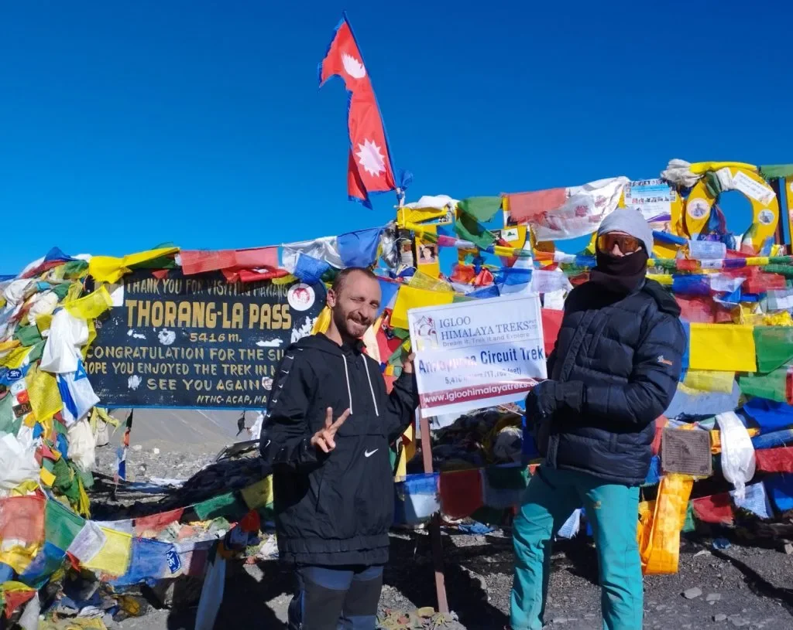
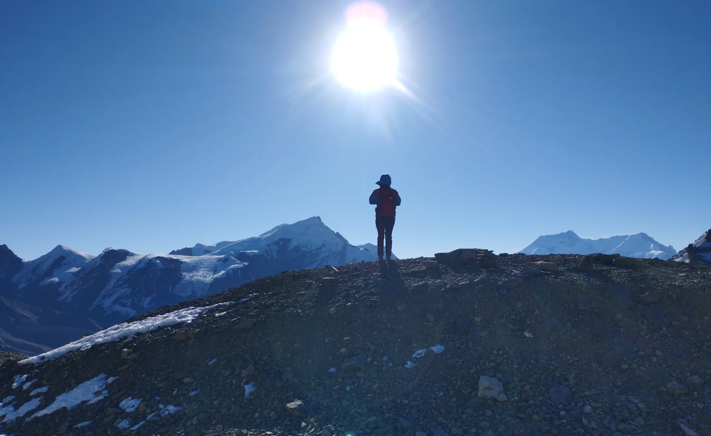
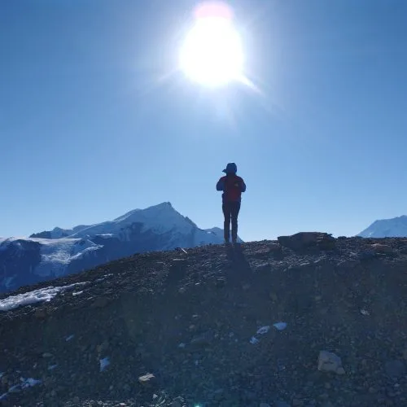
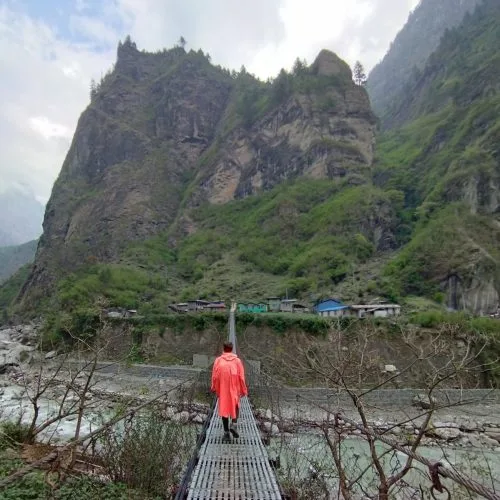
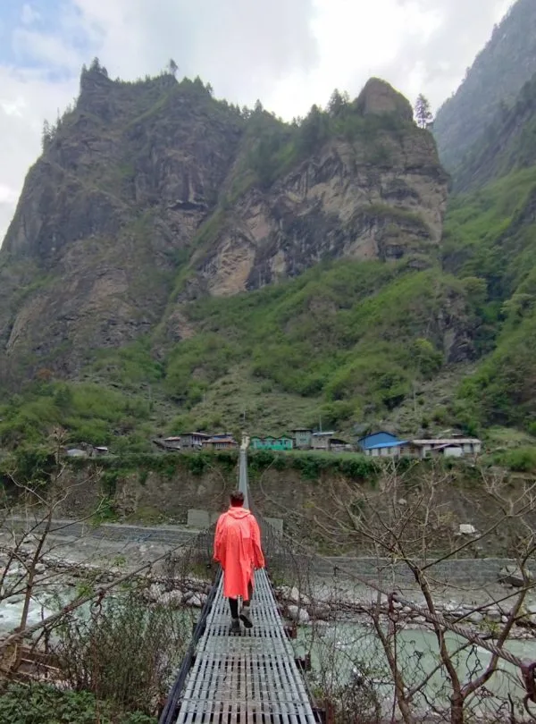
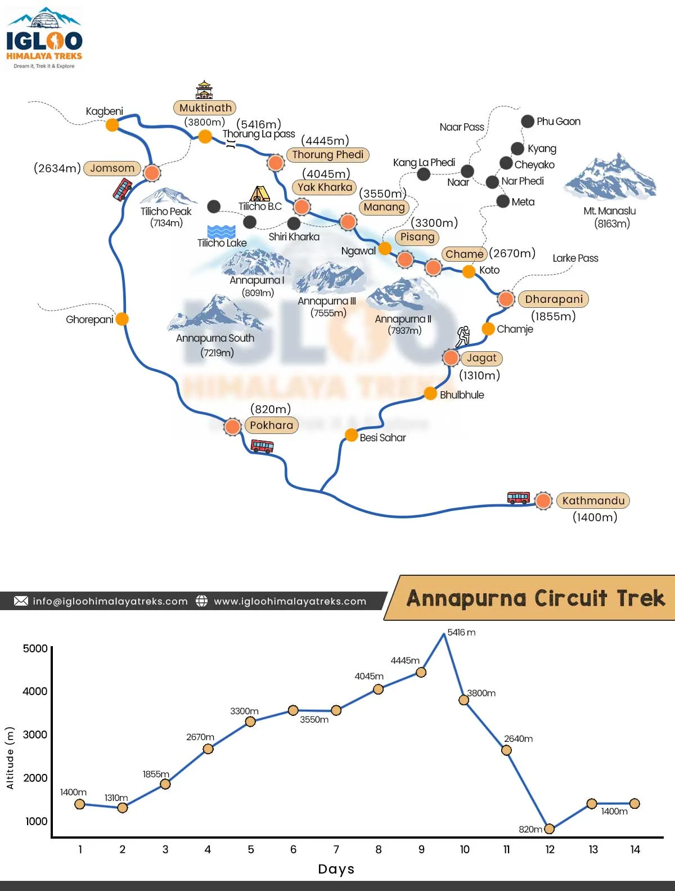

The Spirit of the Circuit: Why This Remains the World's Ultimate Foot Journey
Few trekking routes anywhere on the planet evoke the romance, cultural richness, and raw geographic contrast of the Annapurna Circuit. Unlike out-and-back valley treks such as Everest Base Camp or Annapurna Sanctuary—where you retrace your exact footsteps on the descent—the Annapurna Circuit is a true continuous loop around an entire mountain kingdom.
Every single day of the Circuit reveals a completely brand-new landscape, distinct ethnic community, and shifting Himalayan horizon. You begin in the roaring, humid river gorge of the Marsyangdi River beneath tumbling waterfalls, climb through dense forests of Himalayan pine and flowering rhododendrons, emerge into the wide, arid, sun-bleached valley of Manang, conquer the arctic pinnacle of Thorong La Pass, and drop into the sacred, wind-carved desert canyons of Mustang. It is this sheer variety of experience that cements its reputation as the gold standard of long-distance trekking.
The Golden Secret of the Circuit: The modern Annapurna Circuit is not about following roads—it is about following the red-and-white striped NATT (Natural Annapurna Trekking Trail) markers. These high-contour footpaths keep hikers across the river and up on ancient trade routes, offering vehicle-free wilderness hiking with unmatched mountain views.
The Marsyangdi River Ascent: Waterfalls, Gurung Hamlets & Subtropical Green
The eastern leg of the Annapurna Circuit follows the thunderous Marsyangdi River as it carves its way down from the glaciers of the northern peaks. Beginning at Dharapani (1,960m)—reached via scenic 4WD jeep transfer from Besisahar—the trail enters a narrow, dramatic defile surrounded by sheer granite walls draped in hanging waterfalls.
Here, the landscape is intensely green. You walk through dense groves of bamboo and weeping hemlock, passing through Gurung and Magar farming villages like Bagarchhap and Danakyu. The air is warm and oxygen-rich, smelling of damp moss, pine resin, and woodsmoke. At Timang (2,270m), you are rewarded with your first jaw-dropping view of Mount Manaslu (8,163m)—the world's eighth-highest mountain—rising majestically across the eastern horizon.

Entering Manang: Pine Scents, Stone Architecture & Ancient Gompas
As you ascend past the district administrative capital of Chame (2,710m) and the massive curved rock face of Paungda Danda (the sacred 'Swarga Dwari' or Gateway to Heaven), the geography changes with stunning suddenness. The moist monsoon air is blocked by the towering Annapurna barrier; the forest thins out into fragrant juniper scrub, and you step into the rain shadow of the Manang Valley.
Manang is the spiritual and cultural heart of the eastern circuit. The indigenous Manangi people are skilled mountain traders and devout Tibetan Buddhists. Villages like Upper Pisang, Braga, and Manang are architectural marvels: flat-roofed stone houses clustered together on sun-facing hillside benches, with wooden ladders connecting open roof terraces used for drying firewood and grain.
At Braga, visit the 500-year-old Braga Gompa, perched high on a sandstone cliff above the valley floor. Inside the dim, butter-lamp-lit sanctuary, ancient thangkas, gilded statues of Padmasambhava, and centuries of sacred Buddhist texts line the timber walls.
The Upper Route via Ghyaru & Ngawal: The Circuit's Greatest Panoramic Trail
Between Upper Pisang and Manang, trekkers face a crucial route choice: the flat, easy lower valley road, or the steep, high-contour Upper NATT Route via Ghyaru and Ngawal. Choosing the upper route is non-negotiable for anyone who loves epic mountain panoramas.
The trail begins with a steep, switchbacking climb of roughly 400 vertical meters up to the cliffside eagle's nest village of Ghyaru (3,670m). When you reach the village mani wall, turn around: stretching before you is arguably the most breathtaking mountain vista in the Himalaya. The entire Annapurna massif—Annapurna II (7,937m), Annapurna IV (7,525m), Annapurna III (7,555m), and Gangapurna (7,454m)—stands directly opposite across the valley, rising sheer like a colossal glaciated fortress.
From Ghyaru, the trail traverses high alpine ridges through medieval Ngawal (3,660m), providing hours of uninterrupted mountain panoramas while assisting your body with vital early acclimatization.

Approaching the High Alpine: Yak Pastures, Blue Sheep & Frozen Moraines
Leaving Manang, the trail leaves human settlements behind and ascends into the sub-alpine tundra. Trees disappear entirely, replaced by low-lying alpine herbs, cushion plants, and dwarf juniper. At Yak Kharka (4,050m) and Letdar (4,200m), long-haired yaks graze across open meadows flanked by frozen glacial streams.
Keep a sharp eye on the steep shale cliffs on the opposite side of the Jarsang Khola: herds of wild Himalayan Blue Sheep (Bharal) regularly forage on the rocky ledges, watched from high above by soaring Himalayan Griffons and golden eagles. At Thorong Phedi (4,450m), the valley narrows into a barren, scree-flanked amphitheater at the base of Thorong Peak, where trekkers gather in warm dining rooms to prepare for the summit push.

The Crucible: Crossing Thorong La Pass (5,416m) at Dawn
Crossing Thorong La Pass (5,416m) is the emotional and physical climax of the trek. Departing Thorong Phedi at 4:15 AM under a diamond canopy of stars, you hike by headlamp in sub-zero cold (-10°C to -15°C). The ascent is a slow, rhythmic meditation: breathing in sync with each measured step as the air grows steadily thinner.
Reaching the pass summit as the first golden sunbeams strike Thorong Peak is a moment of pure euphoria. The iconic cairn festooned with thousands of multicolored Tibetan prayer flags flutters in the alpine breeze, with 360-degree panoramas extending north toward the brown hills of Tibet and west toward the massive bulk of Dhaulagiri (8,167m).
Descending to Muktinath: The Great Cultural & Spiritual Transition
Dropping over the western side of Thorong La brings an astonishing geographic transformation. In a single morning, you transition from arctic snowfields into the sun-drenched, desert-like rain shadow of Mustang. Waiting at 3,800 meters is the sacred temple town of Muktinath.
Venerated for millennia by both Hindus (who call it Muktidham, place of liberation) and Buddhists (who call it Chumig Gyatsa, hundred springs), Muktinath is home to 108 sacred water spouts carved in the shape of boar heads, fed by icy mountain springs. Pilgrims from across Nepal and India travel here to bathe in the purifying waters. Walking into Muktinath after surviving the pass feels like stepping into an ancient spiritual sanctuary.

The Wind-Carved Kali Gandaki: Marpha Apples, Deep Gorges & Cobblestones
Below Muktinath lies the legendary Kali Gandaki River Valley—the deepest gorge on Earth, flanked by the 8,000-meter giants of Annapurna I (8,091m) to the east and Dhaulagiri I (8,167m) to the west. The riverbed is world-famous for Shaligrams—sacred black ammonite fossils embedded in river stones from the ancient Tethys Sea.
Further down the valley sits Marpha, the picturesque white-walled capital of the Thakali people. Known as the 'Apple Capital of Nepal,' Marpha features immaculate stone-paved alleys, flat earthen roofs stacked with golden firewood, and lush orchards producing sweet crisp apples, homemade apple cider, and legendary apple brandy. Wandering the peaceful whitewashed alleys of Marpha is the ultimate reward after the high pass.
The Kali Gandaki Wind Warning: Every day at approximately 11:00 AM, intense thermal winds begin howling up the Kali Gandaki canyon from the plains of India toward Tibet, kicking up stinging dust along the riverbed. Always plan your walking between Kagbeni, Jomsom, and Marpha in the early morning hours before the wind arrives.

Village-by-Village Guide: Chame, Pisang, Braga, Manang, Muktinath & Marpha
Understanding the key settlements along the circuit helps you pace your journey and select the best overnight stops:
| Village | Altitude | Dominant Culture | Signature Highlight | Teahouse Quality |
|---|---|---|---|---|
| Chame | 2,710 m | Gurung / Tibetan | Natural riverside hot spring; views of Lamjung Himal. | High; attached bathrooms & hot showers. |
| Upper Pisang | 3,310 m | Manangi Tibetan | Ancient monastery overlooking curved Paungda Danda rock. | Moderate; traditional wood-burning stoves. |
| Braga | 3,450 m | Manangi Tibetan | 500-year-old cliffside gompa; traditional stone architecture. | High; rustic charm with great bakeries. |
| Manang | 3,540 m | Manangi Tibetan | German bakeries, movie halls, HRA altitude clinic, Gangapurna lake. | Excellent; premier rest hub of circuit. |
| Muktinath | 3,800 m | Hindu / Buddhist | 108 sacred water spouts; eternal flame temple; Bob Marley cafe. | High; comfortable hotels with hot showers. |
| Marpha | 2,670 m | Thakali | Cobblestone whitewashed alleys; apple brandy distilleries. | High; rich gastronomy and cozy garden courtyards. |
Teahouse Life, Apple Pies & Hospitality Along the Circuit
Teahouse living on the Annapurna Circuit is a joyful, highly social experience. Because the Circuit has hosted international travelers for five decades, teahouse operators have perfected high-mountain hospitality:
- The Bakeries of the High Circuit: From Chame to Manang and Marpha, teahouses feature glass display cases loaded with fresh apple crumbles, cinnamon rolls, chocolate cakes, and yak cheese croissants.
- Thakali Dining: Order traditional Thakali Dal Bhat in Marpha and Jomsom. Cooked with local buckwheat fritters, mountain lentils, ghee, and wild mountain herbs, it is widely considered the finest cuisine in the Himalaya.
- Cozy Dining Hall Evenings: In the evenings, hikers from twenty different nations gather around central dining room stoves, drying socks, playing cards, sharing route tips, and planning pass morning under glowing solar lights.
Packing for Two Worlds: Humid River Canyons to Sub-Zero Arctic Passes
Because the Annapurna Circuit transitions from 24°C sub-tropical humidity to -15°C arctic winds at Thorong La, your gear must be versatile and modular:
- 3-Season to 4-Season Footwear: Sturdy waterproof leather or synthetic boots with deep lug soles and ankle support. Boots must be thoroughly broken in before your trip.
- Layering Versatility: Pack 2 pairs of lightweight hiking pants/shorts for the lower river valley, and full heavyweight merino base layers, fleece mid-layers, and an 800-fill down jacket for elevations above 3,500m.
- Microspikes: Essential for crossing icy snow patches on high ridges approaching Thorong La.
- Hydration & UV Protection: Two 1L wide-mouth Nalgene bottles with insulated jackets, plus Category 3 or 4 glacier glasses and high-SPF mineral sunscreen.
| Gear Layer / System | Recommended Technical Specification | Target Temperature | Why It Is Crucial for the Circuit |
|---|---|---|---|
| Next-to-Skin Base Layer | 200-250 g/m² 100% Merino wool top & bottoms | +15°C down to -15°C | Wicks perspiration on humid climbs and retains core warmth in sub-zero passes. |
| Insulating Mid-Layer | Polartec grid fleece or lightweight synthetic hoodie | +5°C to +15°C | Breathable insulation for active trekking during chilly morning departures. |
| Heavy Down Parka | 800+ fill power goose down with baffled insulated hood | Sub-zero to -20°C | Mandatory for freezing Thorong La summit departures and unheated teahouse nights. |
| Weatherproof Outer Shell | 3-layer Gore-Tex Pro or eVent wind/waterproof jacket | Gale-force winds & rain/snow | Deflects biting 50 km/h winds on Thorong La and Kali Gandaki canyon. |
| Footwear & Traction | Waterproof high-ankle boots + 10-point trail microspikes | Ice, mud & loose scree | Provides essential grip on steep frozen scree zigzags ascending to 5,416m. |
| Sleeping System | 4-season down sleeping bag (-15°C comfort rating) | Unheated high-camp rooms | Ensures vital sleep recovery at High Camp (4,880m) where indoor temps drop below -10°C. |
Acclimatization, Hydration & Health Protection Across 5,400 Meters
Reaching 5,416 meters without suffering altitude illness requires structured discipline:
| Elevation Zone | Elevation Gain / Day | Primary Health Objective | Tactical Protocol |
|---|---|---|---|
| Dharapani to Chame (1,960m - 2,710m) | +750m | Cardiovascular conditioning | Drink 3.5L fluids; keep heart rate moderate on climbs. |
| Chame to Upper Pisang (2,710m - 3,310m) | +600m | Entry into sub-alpine air | Watch for mild evening headaches; take electrolytes. |
| Pisang to Manang (3,310m - 3,540m) | +230m net (+450m via Ngawal) | First hypoxic threshold | Take high route for 'climb high, sleep low' stimulus. |
| Manang Rest Day (3,540m) | 0m net (Hike to 3,900m) | Mandatory physiological pause | EPO synthesis; attend HRA clinic briefing. |
| Manang to Yak Kharka (3,540m - 4,050m) | +510m | Crossing 4,000m barrier | Slow, steady pace; avoid running or heavy lifting. |
| Thorong Phedi to Pass (4,450m - 5,416m) | +966m summit push | Pass crossing | 4:15 AM start; hydrate with warm tea; cross before 9:30 AM. |
Permits, Certified Guides & Smart Jeep Logistics
Planning the logistics for the Annapurna Circuit is straightforward with modern support:
- Mandatory Permits: ACAP Entry Permit (NPR 3,000 / ~$23) and TIMS Card (NPR 2,000 / ~$15). Verified at police checkposts in Dharapani, Chame, Manang, and Muktinath.
- Mandatory Guide Rule: Foreign trekkers are required by law to trek with a licensed guide registered through an accredited Nepal agency. Your guide manages daily teahouse reservations, evaluates pass snow conditions, and monitors SpO2 oxygen levels.
- Jomsom to Pokhara Flight: After reaching Muktinath, skip the rough downhill road by taking a scenic 20-minute flight from Jomsom Airport to Pokhara, flying down the Kali Gandaki canyon between Annapurna and Dhaulagiri.
The Lasting Legacy: Why Trekking the Annapurna Circuit Changes You
The Classic Annapurna Circuit is far more than a physical hike; it is a life-affirming pilgrimage through the very heart of the Himalaya. When you complete the loop—having climbed through sub-tropical river defiles, wandered through 500-year-old Buddhist monasteries, conquered 5,416 meters in the freezing dawn, and tasted crisp apples in the whitewashed streets of Marpha—you return with a profound sense of perspective, peace, and accomplishment.
To ensure your expedition is an unforgettable success, remember these core rules:
- Follow the Red-and-White NATT Trails: Avoid walking on motor roads; the high footpaths via Ngawal and Ghyaru offer world-class hiking.
- Spend 2 Nights in Manang: Never rush past 3,500 meters without a dedicated acclimatization day.
- Depart for Thorong La at 4:15 AM: Beat the ferocious 10:00 AM pass winds and cross safely into Muktinath.
- Carry Two Trekking Poles & Microspikes: Cushion your joints on the 1,600m descent and stay secure on frozen moraines.
- Trek With a Trusted Local Partner: Partner with Igloo Himalaya Treks. Our experienced Sherpa guides, seamless jeep connections, and commitment to mountain safety ensure your Annapurna Circuit journey is an absolute masterpiece.


Ready to Experience the Himalayas?
Whether you are preparing for high-altitude trekking, cultural circuits, or alpine summit expeditions, start planning a bespoke journey tailored to your fitness, travel season, and style.